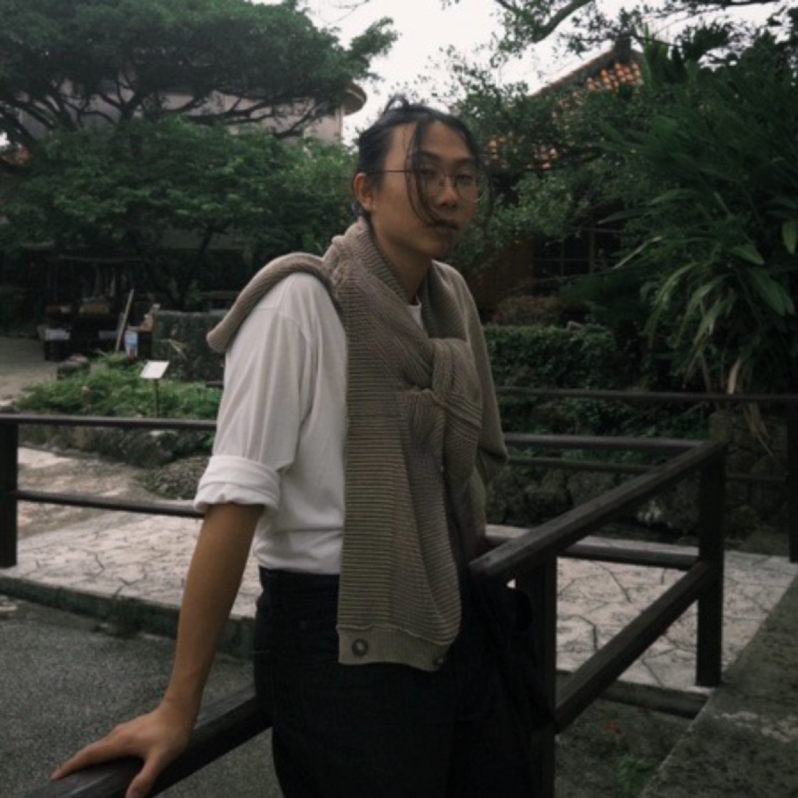
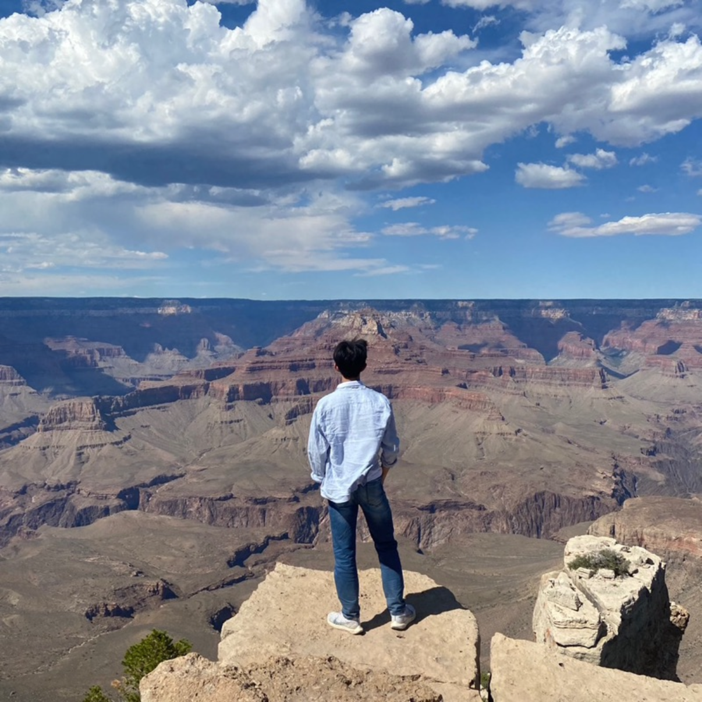
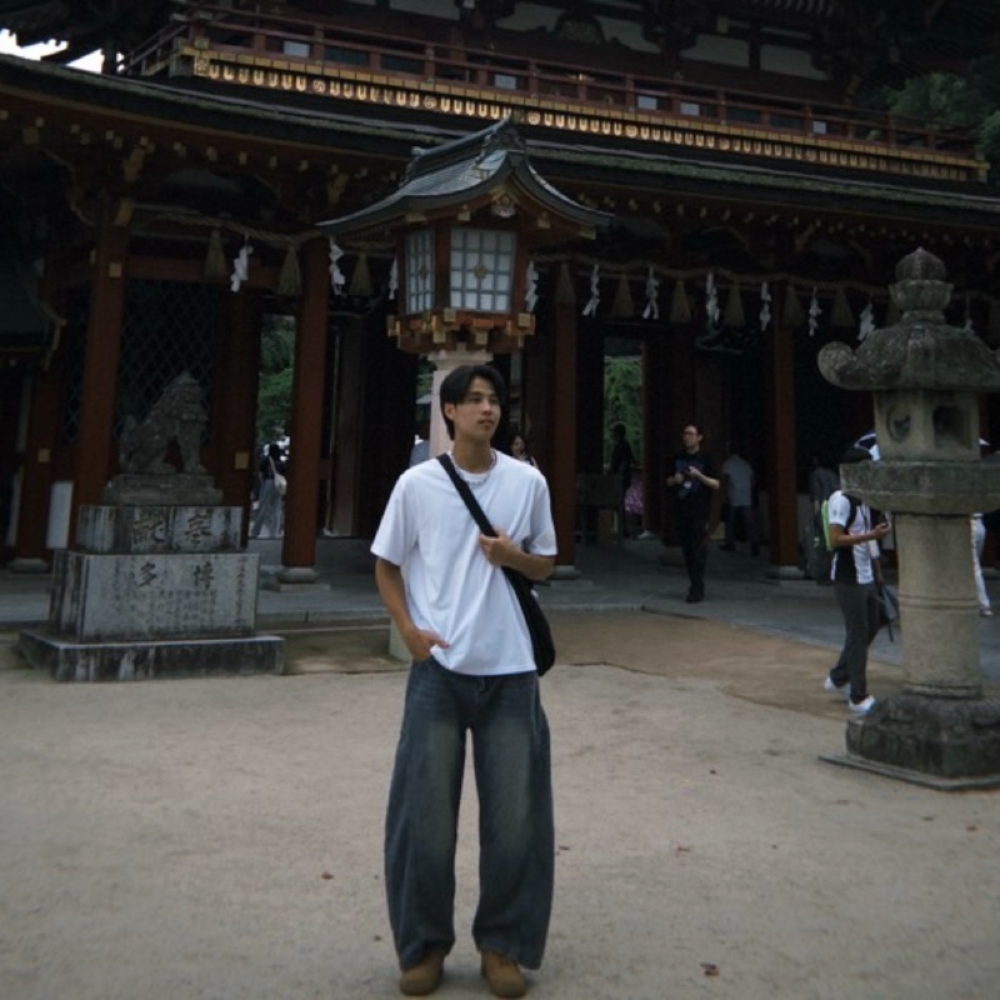

關於公園
位於桃園虎頭山腳下的「大有梯田生態公園」，是全台首座以水梯田為主題的生態公園。園區佔地約 2.1 公頃，規劃為「生態梯田」、「美好食光」及「森林挑戰」三大區域。
這裡不僅復育了傳統水梯田地景，兼具生態教育與水土保持功能。最受歡迎的森林挑戰區設有全齡式體能闖關設施、松鼠滑索及磨石子溜滑梯，適合各年齡層挑戰。園內亦有窯烤披薩與沙坑，是結合自然生態與親子遊憩的熱門景點。
導覽影片
VR 探索
隨堂測驗
出發地圖
製作團隊
許至昀
組長 / 企劃 / 拍攝 / 剪輯
組長 / 企劃 / 拍攝 / 剪輯

王又吾
企劃 / 拍攝 / 文案
企劃 / 拍攝 / 文案

彭俊翰
VR / 企劃 / 拍攝
VR / 企劃 / 拍攝

劉彥呈
VR / 企劃 / 拍攝
VR / 企劃 / 拍攝